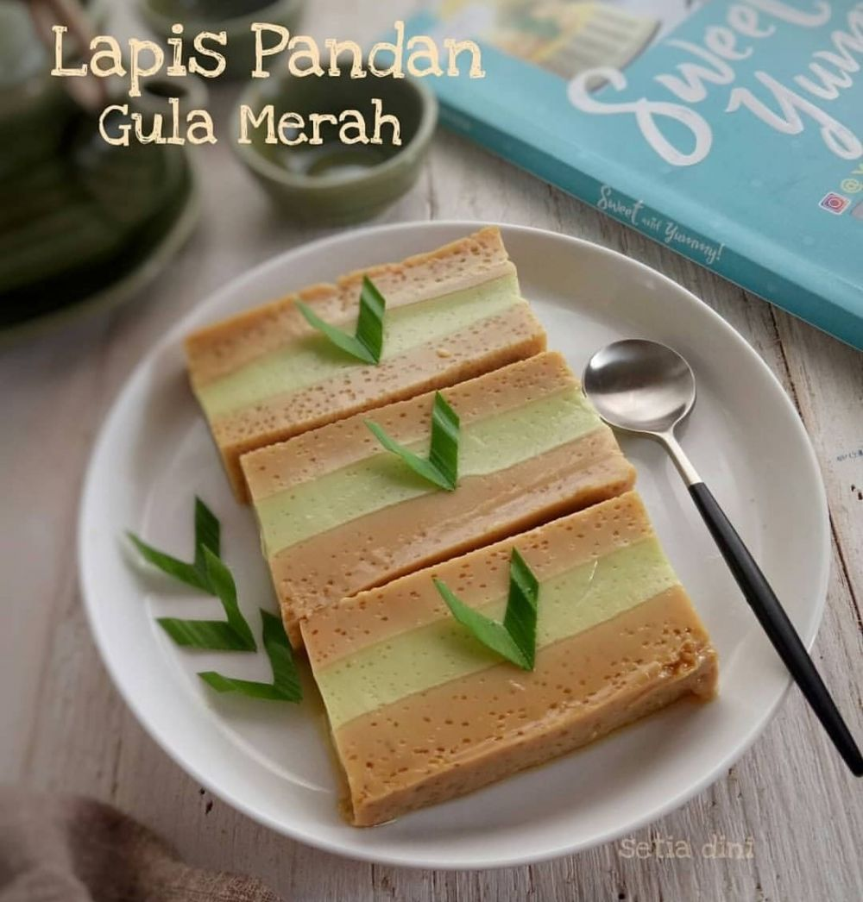

Kue Lapis Pandan Gula Merah

Bahan Gula Merah :
Bahan Pandan :
Cara Membuat :
- Panaskan kukusan, siapkan loyang 20x10 yang dioles minyak, letakkan dalam kukusan
- Panaskan santan hingga mendidih, angkat sisihkan. Bagi 2 adonan, gula merah 600 ml dan pandan 350 ml
- Campur semua bahan gula merah kecuali santan, aduk rata. Tuang santan, aduk, saring
- Tuangkan 1/2 adonan ke dalam loyang, masak selama 20 menit hingga matang
- Campur semua bahan pandan (kecuali santan), aduk rata. Tuangkan santan, aduk kembali, saring
- Tuang perlahan di atas lapisan gula merah yang sudah matang, kukus kembali selama 20 menit hingga matang.
- Tuangkan kembali sisa adonan gula merah di atasnya, kukus selama 25 menit. Angkat dan dinginkan.
- Potong sesuai keinginan dan kue lapis siap dihidangkan